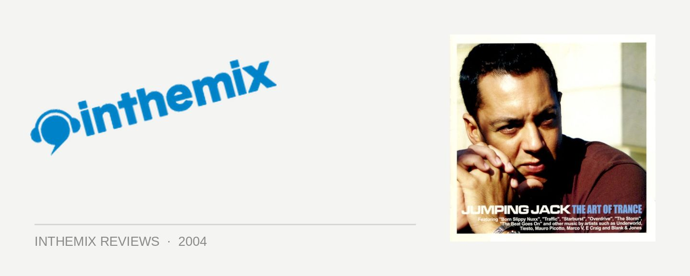

Various Artists - Jumping Jack: The Art of Trance
(Enigma Records/Stomp)
You only have to listen to some of the tunes emerging out of Europe at the moment to realise that uplifting trance is steamrolling its way back into fashion. For way too long the style has been languishing on commercial radio in the form of awful pop derivatives, and it’s good to see quality and enthusiasm finally returning to the music. Sydney DJ Jumping Jack has been one of the city’s biggest names since the early 90’s and has seen continued success with his residency at Sublime, but for the last long while has been known as more of a hard-trance aficionado. But recently he has thrown his full weight behind the reinvigorated style, and this is reflected in his new mix CD The Art of Trance.
It’s no secret that the Sublime crew have been the source of much venom on the ITM forums over the last several years, but anyone who has heard Jumping Jack play out will know that his credentials as a trance DJ can’t be called into question. He has an innate understanding of the music that comes from doing the rounds for so long and he knows how to work a crowd, with his mixing as technically excellent as any of his DJ colleagues. So I was excited to hear his take on the current state of trance in 2004, hoping that it would reflect the passion that has recently returned to the global scene. But while Jumping Jack is a superb club DJ, his skills can often fail to translate quite as well to mix a CD, and this is unfortunately apparent on The Art of Trance.
From the moment that I whacked on the first CD, it was clear that Jumping Jack wasn’t pulling any punches. Fast, throbbing and never letting up, what you have is 75 minutes of pure musical elation. Except because of the track listing that’s been chosen, none of it is quite as effective as you would hope. When it pounds away in the same fashion from beginning to end there is very little to cause it to rise and drop in tension, or to stop it all from becoming a homogenous blur. Some of the inclusions on the CD evoke the classic excitement and rapture associated with uplifting trance, with Tecno-Punk’s Energise and Octagen & Arizona’s Starburst being good examples. But in a disturbing trend, an alarming number of the songs sound close to exactly like tracks that were being thrashed several years ago. Uplifting trance has always been music of the “now”, but it’s also important that producers continually reassess and reinvent their sound in order retain both creativity and the interest of their audience. Maybe I was expecting too much, but this just isn’t the case here. At the end of the day the sounds are all pretty standard, and while none of it is bad, there’s very little present to particularly excite either.
While the first CD of The Art of Trance is disappointing coming from someone with the stature of Jumping Jack, it is on the second CD when he delves into a range of different sounds that he is considerably more successful. In contrast to the generic sounds of the opening mix, CD number-two is a fast moving, tech-laden treat. This is trance where the producers have tried to innovate, and to do this they’ve chucked a number of other genres into the mix: rolling electro basslines, and the driving repetition of techno. The track that jumps out and slaps you in the face more than any other is the furiously pumping groovy tech of Marco Cordi & Viktor DJ’s Voo Doo. With a rockin’ bassline, techy bleeps and screeching feedback, the chorus builds up into a swelling upsurge that is spectacularly hypnotic. The Disco Brothers’ Come With Us is a great example of the niche (but great sounding) electro-trance genre, while the contributions from DJ Energy and Twister Silence both come from producers who clearly want to create driving club sounds that possess something just a little different and distinctive. The CD is full of tasty treats like this, and is definitely going to appeal to trance fans looking for something with a little originality, and hasn’t been heard a million times before.
The circle has certainly turned, and uplifiting trance has come into favour again – but The Art of Trance doesn’t really do the rebirth of the style any justice. If you want to hear a CD that properly represents the return of uplifting trance, then Armin Van Buuren’s recent A State of Trance 2004 would be the best place to start - but the opening mix of Jumping Jack’s new compilation doesn’t really satisfy. If you want to get a look in at some quality tech-trance however, you’ll be better served with some of the quality choices found on the CD. So while Jumping Jack is unquestionably one of Australia’s greatest trance DJs, The Art of Trance doesn’t offer a definitive reflection on the state of the global scene as was hoped. Even when you take into account the assortment of quality tunes found on the second CD, something is lacking - and The Art of Trance is destined to takes its place among the many merely above-average compilations that continue to flood the record-store shelves.